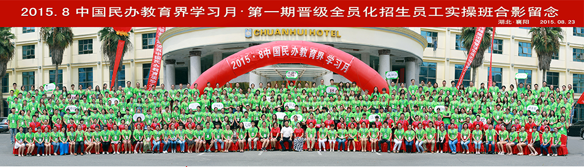

对于校外开学生托管班的来说，最为重要的是什么？相信大家定当异口同声的表示生源，这是办学必不可少的，没有生源我们教谁？所以生源是办学的基础。但是就这一项，就让校外开托管班的校长们头痛不已，怎么抓招生？怎么去招生？现在很多托管班的老师认为招生是老板们才应该考虑的事情，他们就只负责教学。或者老板认为招生根本不需要准备，认为自己靠当地的人缘自然而然就有人来，其实，这种对招生的认知是完全错误的，这种想法的老板生意是做不大的。如今提倡的是“全员化”招生，简而言之，招生是包括老师们也应该进行的事情！ 在全员化招生这一方法，晋级教育绝对是该行业内的领导机构，在晋级教育的报名现场经常会出现家长们排队报名的现象，而且这儿的老师们常常为了招生而顾不上吃饭睡觉的时间，老师以及学校的领导们都投身到了这个招生的行业中，为什么晋级的老师们就会心甘情愿的去参加招生活动呢？
对于校外开学生托管班的来说，最为重要的是什么？相信大家定当异口同声的表示生源，这是办学必不可少的，没有生源我们教谁？所以生源是办学的基础。但是就这一项，就让校外开托管班的校长们头痛不已，怎么抓招生？怎么去招生？现在很多托管班的老师认为招生是老板们才应该考虑的事情，他们就只负责教学。或者老板认为招生根本不需要准备，认为自己靠当地的人缘自然而然就有人来，其实，这种对招生的认知是完全错误的，这种想法的老板生意是做不大的。如今提倡的是“全员化”招生，简而言之，招生是包括老师们也应该进行的事情！
在全员化招生这一方法，晋级教育绝对是该行业内的领导机构，在晋级教育的报名现场经常会出现家长们排队报名的现象，而且这儿的老师们常常为了招生而顾不上吃饭睡觉的时间，老师以及学校的领导们都投身到了这个招生的行业中，为什么晋级的老师们就会心甘情愿的去参加招生活动呢？
北京
【专家讲师】
【收费政策】
一人参会费1280元，
同一家机构，三人团报，每人980元，
五人团报，每人780元。
【课程内容